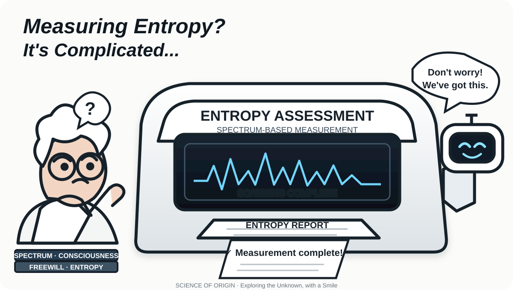

Entropy Assessment: Spectrum-Based Measurement Architecture
Scanner technologies, spectral measurement, calibration and traceability
Research paper · Public account of a team-verified assessment system · Proprietary details withheld
Abstract
Entropy Assessment is organized as a multidimensional assessment framework with nine principal zones and an auxiliary assessment structure. Its measurement architecture uses scanners to obtain Spectrum Values for individual assessment points and to determine auxiliary Spectrum levels.
This paper describes the assessment's scanner-based measurement architecture: the common comparison basis, the relationship between Frequency and Spectrum within this framework, scanner coverage and resolution, narrow- and wide-spectrum scanning, automatic analysis and mapping, calibration references, scanner development, and measurement traceability.
The account is limited to the research architecture and measurement principles approved for public description. Detailed assessment points, individual results, proprietary procedures and confidential business methods are not disclosed.

1. Research context and verification
Entropy of Consciousness is an application research field within Science of Consciousness. Its assessment framework examines multiple characteristics, capabilities, dynamics, flexibility, integration and practical operation through a structured set of assessment areas.
The assessment system and findings described here have been scientifically verified by at least three research teams within the project, as confirmed by the project owner. Science of Origin's publication standard is that research is published only after verification by its research teams. Detailed verification records, underlying evidence and proprietary procedures are not included in this public account.
Internal team verification and public disclosure are separate matters. The publication of a research architecture does not require disclosure of confidential datasets, implementation details or commercially sensitive methods.
2. Assessment and comparison structure
The assessment framework is organized into nine principal zones, together with an auxiliary assessment structure. Individual assessment points are measured using scanners, which directly output the corresponding Spectrum Values. Auxiliary Levels 1–9 are also determined through Spectrum scanning.
Comparative assessments use the same assessment standards, test conditions and assessment timing for the participants being compared. The same numerical scale and unit apply across participants and assessment points, providing a common basis for point-by-point comparison.
The values are not restricted to the interval from 0% to 100%. They may exceed 100% and may also be negative. Positive and negative values represent opposite directions. A value of zero may indicate neutrality or none, depending on the particular assessment point; the point-specific explanation accompanies the value. Some points may be designated as reverse-value points, meaning opposite or negative interpretation rather than a presumed mathematical inversion formula.
These interpretations are specific to the assessment system. They should not be generalized into a universal rule that a higher value is always better, or that zero has one meaning across every point.
3. Frequency and Spectrum
Within the terminology of this assessment framework, Frequency and Spectrum refer to the same thing. The framework describes the natural reference in terms of objective wavelength and treats it as the complete natural Spectrum, extending without a known upper or lower boundary.
This natural Spectrum is regarded as universal and independent of the particular target being assessed. It provides the common reference basis used by reference-calibrated scanners. The target's own Spectrum is measured separately; the reference is not defined by the target.
The use of Frequency and Spectrum as equivalent terms in this paper follows the framework's own terminology. It is not intended to replace or redefine terminology used in other scientific disciplines.
4. Scanner technologies and capabilities
Scanner technologies differ in their detection capabilities. Their limitations include both the spectral range they can detect and the level of detail they can distinguish within that range.
- Coverage: a scanner may cover a narrower or wider range of the Spectrum, with different lower and upper detection boundaries.
- Resolution: a scanner may distinguish finer or coarser spectral detail.
Coverage and resolution are separate dimensions. A scanner may be wide-spectrum but relatively coarse, or narrow-spectrum but relatively fine. A narrower or coarser result remains valid within the capability and scope of the scanner that produced it; validity does not mean that every scan provides the same coverage or detail.
The assessment system includes reference-calibrated scanners and scanners that are inherently consistent without a separate calibration procedure. These describe different scanner approaches. Scanner technologies may also differ in their spectral coverage, resolution and processing capabilities.
5. Narrow- and wide-spectrum scanning
A narrow-spectrum scanner measures a specific, narrower Spectrum for the relevant assessment. A wide-spectrum scanner captures a broader Spectrum that can relate to multiple assessment points. Depending on what is being analyzed, an assessment point may have its own Spectrum, or multiple points may share part of a Spectrum.
For wide-spectrum scanning, the captured Spectrum is processed through a prebuilt system. Analysis, categorization and mapping to the relevant assessment points are performed automatically. The process produces the corresponding Spectrum Values for the mapped points.
The prebuilt analysis and mapping rules can be updated as scanner technology and research requirements advance. The processing implementation can therefore evolve while the underlying target Spectrum and the common assessment standards remain unchanged.
6. Auxiliary Spectrum levels
Auxiliary Levels 1–9 are determined by scanning the specific Spectrum. The scanner automatically outputs the Auxiliary Level and the corresponding Spectrum result; the operator does not manually select or assign the level.
The auxiliary level is therefore a scanner output associated with the specific Spectrum being examined, rather than a level manually assigned by a recorder.
7. Calibration and consistency
Reference-calibrated scanners use the universal natural Spectrum and Frequency reference described above. The reference is independent of the target and provides a common basis for calibration.
The assessment system also includes inherently consistent scanners that do not require a separate calibration procedure. Both scanner approaches are available for the assessment, and the project owner confirms that they can produce equivalent results for the same Spectrum under the same conditions.
Repeated scans of the same Spectrum under the same conditions are reported to produce the same Auxiliary Level and Spectrum result. Different scanners are likewise reported to produce consistent results under the same conditions. These are properties confirmed by the project owner for the assessment system; the detailed verification records are not publicly disclosed here.
8. Scanner upgrades and continuity of measurement
Updating scanner technology does not change the frequency or Spectrum of the target. An upgrade improves the scanner's capabilities, which may include wider spectral coverage and finer resolution. It changes what the scanner can detect and distinguish, not the target merely by virtue of the upgrade.
Previously recorded results remain part of the measurement history. However, historical data is not automatically enhanced by a scanner upgrade. To obtain results using the upgraded scanner's wider or finer capabilities, the target must be scanned again.
Both the original and new scan results are retained. This preserves the earlier measurement while allowing the additional detail obtained through improved scanning capability to be examined. Scanner development and changes in the target are treated as distinct matters.
9. Measurement traceability and target conditions
Each scan is recorded with information identifying how and under what conditions it was obtained. The records include:
- Scan date.
- Scanner model and version.
- Scanning configuration.
- Environmental conditions.
- Other test conditions.
- The target's actual condition at the time of scanning.
- The scanner's coverage and resolution information.
Changes in the target's actual condition are recorded separately from scanner upgrades and improvements in measurement resolution. This distinction supports interpretation of successive results without confusing a change in the target with a change in the measuring instrument.
10. Public scope and protected information
This paper describes the public-facing architecture and measurement principles of Entropy Assessment. It does not publish detailed point-level assessment content, individual participant results, proprietary implementation procedures or confidential business methods.
The omission of proprietary details does not imply that the corresponding work has not been performed or verified. It reflects the project's decision about which research materials are made publicly available at this stage.
11. Conclusion
Entropy Assessment uses scanner-based Spectrum measurement within a multidimensional assessment architecture. Its measurement system distinguishes spectral coverage from resolution, supports narrow- and wide-spectrum scanning, automatically analyzes and maps wide-spectrum results, and records the conditions and scanner configuration associated with each scan.
The natural Spectrum serves as the universal reference described by the framework, while the target Spectrum remains independent of scanner capability. Scanner technology can advance to provide wider coverage and finer detail without changing the target; obtaining those improved details requires a new scan, with historical and new results retained.
This public paper records the assessment architecture and measurement principles approved for disclosure while protecting confidential implementation details.
Entropy Assessment · Spectrum-based measurement architecture · Science of Origin
← Entropy of Consciousness: Research Framework and Architecture · Science of Consciousness · VII. Research